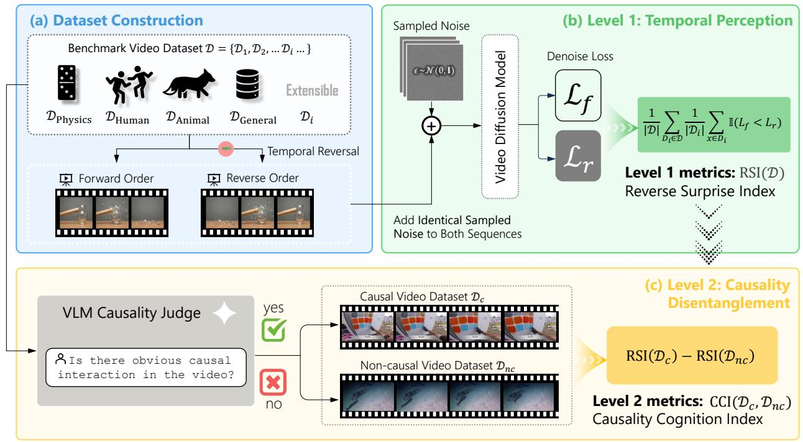
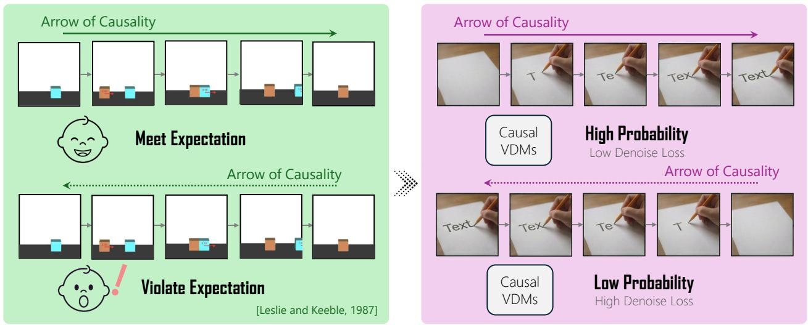

YoCausal：视频 SSL/world model 若要作为通用动态表征，必须证明不只是拟合时序纹理，这篇提供了可复用的评测思路
把“能生成视频”与“理解因果方向”拆开评估，避免只看 temporal statistics。
YoCausal: How Far is Video Generation from World Model? A Causality Perspective You-Zhe Xie, Yu-Hsuan Li, Jie-Ying Lee, Kaipeng Zhang, Yu-Lun Liu, Zhixiang Wang arXiv 原文链接
编号2605.30346优先级P3类别Visual SSL / representation会议arXiv方法基于 Violation of Expectation，用时间反转真实视频作为零成本 counterfactual，提出 RSI 与 CCI 两级指标。来源arXiv / OpenReview
先说结论。视频 SSL/world model 若要作为通用动态表征，必须证明不只是拟合时序纹理，这篇提供了可复用的评测思路。 把“能生成视频”与“理解因果方向”拆开评估，避免只看 temporal statistics。

Figureure 3 · Overview of the YoCausal evaluation frameworkFigure 3 Overview of the YoCausal evaluation framework. (a) Dataset Construction: We construct an infinitely extensible benchmark by using real-world videos from different domains. By applying zero-cost temporal reversal, we generate natural counterfactual pairs (forward $x ^ { f }$ and reverse $x ^ { r } )$ . (b) Level 1 Temporal Perception: Identical sampled noise ϵ is added to both sequences and compute their denoising losses. Reverse Surprise Index (RSI), quantifies the model’s perception of the arrow of time by measuring the proportion of instances where the reversed video has a higher loss $( \mathcal { L } _ { r } > \mathcal { L } _ { f } )$ . (c) Level 2 Causality Disentanglement: To disentangle genuine causal cognition from statistical temporal biases, a Vision-Language Model (VLM) divides the dataset into causal $( \mathcal { D } _ { c } )$ and non-causal $( { \mathcal { D } } _ { n c } )$ subsets. The Level-2 metric, Causality Cognition Index (CCI), is computed as the difference in RSI between these subsets, isolating the model’s genuine causal cognition ability.这张图概括 YoCausal 的整体方法流程。阅读时先看模块之间传递的训练信号，再看作者如何把目标拆成可优化的子问题。

Figureure 2 · Conceptual overview of YoCausal benchmarkFigure 2 Conceptual overview of YoCausal benchmark. We draw inspiration from the Violation of Expectation (VoE) paradigm in cognitive science. (Left) Infants show surprise when seeing videos played in reverse (bottom), violating their intuitive causal cognition [65] (99K). (Right) We transfer this paradigm to generative models: treating the learned data distribution as the model’s cognition, a causally-aware VDM should assign lower probability (higher denoising loss) to counterfactual reversed videos than to forward ones. This elegant analogy allows us to benchmark causal understanding using arbitrarily scalable real-world videos.这张图概括 YoCausal 的整体方法流程。阅读时先看模块之间传递的训练信号，再看作者如何把目标拆成可优化的子问题。
核心问题
视频 SSL/world model 若要作为通用动态表征，必须证明不只是拟合时序纹理，这篇提供了可复用的评测思路。
方法拆解
基于 Violation of Expectation，用时间反转真实视频作为零成本 counterfactual，提出 RSI 与 CCI 两级指标。
主要贡献
把“能生成视频”与“理解因果方向”拆开评估，避免只看 temporal statistics。
实验看点
摘要称评测 13 个 SOTA video diffusion models，发现 arrow-of-time 感知不等于 causal cognition。
局限与读法
评测依赖 VLM 分层与 denoising loss 指标，不是训练方法；对视觉表征的帮助是诊断型。